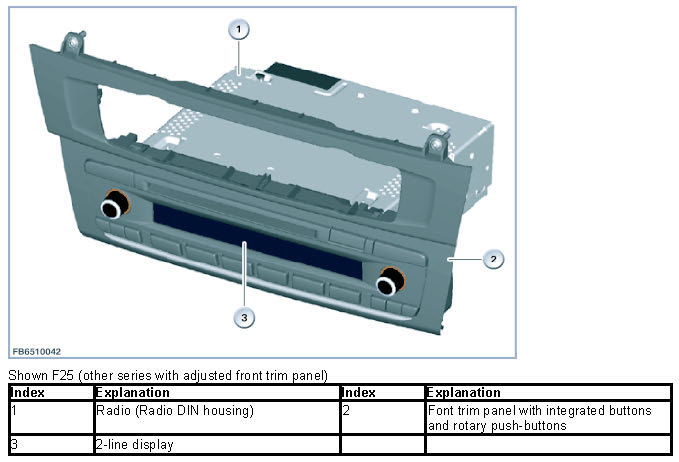
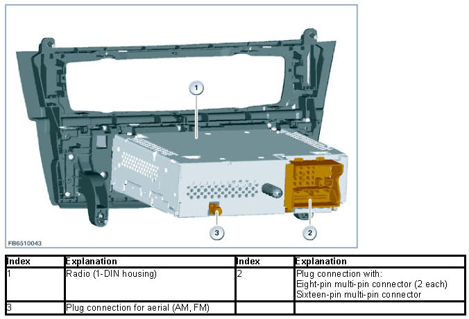
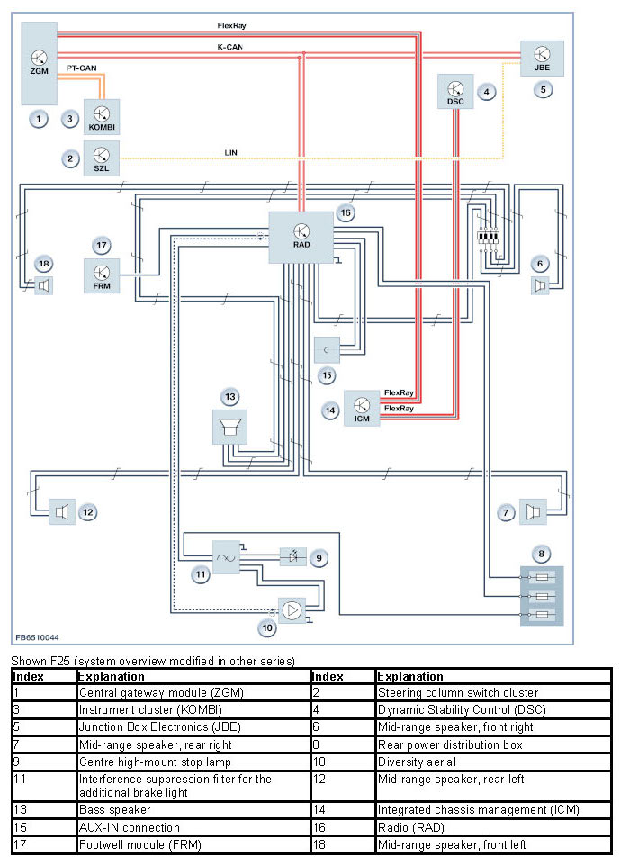

Radio (Generation 1.2)
Radio (Generation 1.2)
Radio (generation 1.2)
The Radio control unit (Generation 1.2) is used as had unit. The 2nd generation of the radio is an advanced development of the radio with a new front trim panel.
This radio is not equipped with a MOST interface. The radio has a 2-row display on its front. An external Central Information Display (CID) and a controller (CON) are not installed on this headunit. Operation is only by means of the integrated buttons and the 2 rotary push-buttons.
Brief component description
Radio
This radio is a basic version. This radio has the following features:
- CD drive.
The CD drive is suitable for playing CDs (digital audio playback). It supports MP3 and WMA formats.
- AUX-IN connection
- 1 Tuner (FM, AM)
- CAN connection

The rear side of the radio has 2 plug connections that are used to connect the control unit to the vehicle electrical system.
The 2-line monochrome display now also shows Check Control messages.
The integrated amplifier of the radio has an output of 4 x 25 watts. This radio does not include a telephone function.

System overview
The system overview shows the functional networking of the radio (RAD):

Notes for Service department
General notes
NOTICE: Different vehicle settings.
Diverse vehicle settings are available on the radio. For example, the opening angle of the automatic tailgate activation (SA316).
NOTICE: Installation of DC/DC converter.
The more frequent starting operations of the vehicles with automatic Start/Stop function (MSA) may result in voltage dip in the vehicle system. To protect certain components that are sensitive to voltage, 1 or 2 DC/DC converters are installed (depending on the vehicle equipment).
We can assume no liability for printing errors or inaccuracies in this document and reserve the right to introduce technical modifications at any time.